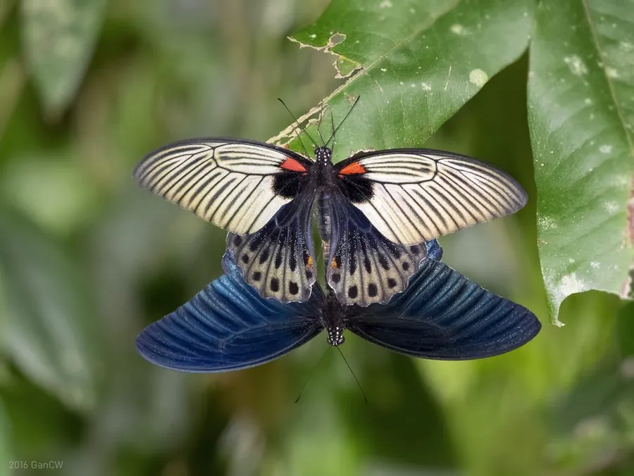

昆虫 · 动物界
美凤蝶 Papilio memnon

雌蝶有多种截然不同的形态，有的长尾有的无尾，翅面黑底配白斑或红斑，雄蝶通体漆黑泛蓝，幼虫取食柑橘。
- 分类
- 门节肢动物门纲昆虫纲目鳞翅目科凤蝶科属凤蝶属
- 栖息环境
- 低山丘陵、村落庭院、林缘与柑橘园附近
- 地理分布
- 南亚、东南亚至中国长江以南各省，以及日本南部
- 保护级别
- 暂无专门保护级别，种群数量稳定
物种志
美凤蝶的翅展约十至十三厘米。雄蝶通体黑褐，后翅中部泛蓝灰色粉光，反面有一列红色月牙斑，没有尾突。雌蝶的形态变化极大，有的模拟金凤蝶带长尾突，有的短尾或无尾，翅面斑纹从白色块斑到橙红斑块不等，同一片地区常同时出现数种型，这种雌蝶多型现象是它最著名的特征，曾被误认为多个不同物种。
它广布于南亚、东南亚至中国长江以南，栖息在低山丘陵、村落庭院和柑橘园附近。成虫飞行稳健，喜访花吸蜜，雄蝶还常成群在溪边湿地吸水，雌蝶多在寄主附近低飞寻找产卵位置。幼虫以柑橘属及芸香科植物为食，雌蝶产卵于寄主嫩叶，幼虫受惊时翻出橙黄色臭角。它尚不属于受威胁物种，但作为柑橘害虫常被喷药防治。
形态与习性
- 翅展约十至十三厘米
- 雌蝶多型有长尾、短尾、无尾及多种斑纹型
- 雄蝶黑褐泛蓝灰粉光，后翅反面有红斑
- 食性幼虫取食柑橘属等芸香科植物
- 习性雄蝶常群集溪边湿地吸水
- 分布南亚至中国长江以南，日本南部
趣味知识
- 同一片橘园里可能同时飞出好几种模样的雌蝶，它们其实是同一个物种。
- 雌蝶模拟有毒或难吃的蝶类，用不同的翅型迷惑捕食者，这叫拟态多型。
- 它的幼虫专吃柑橘叶，因此常被果农当作害虫防治。